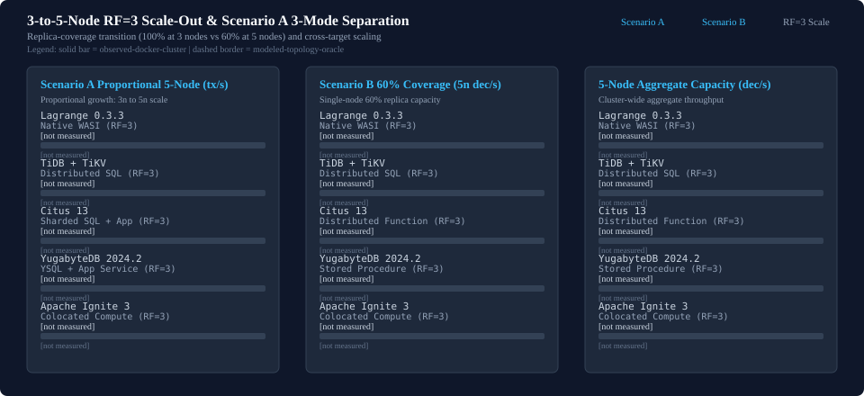
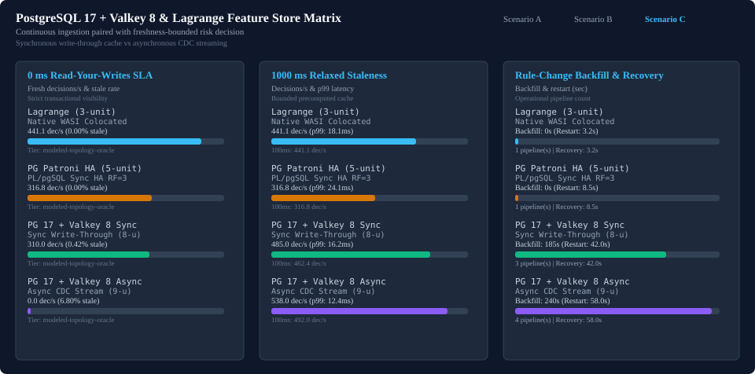
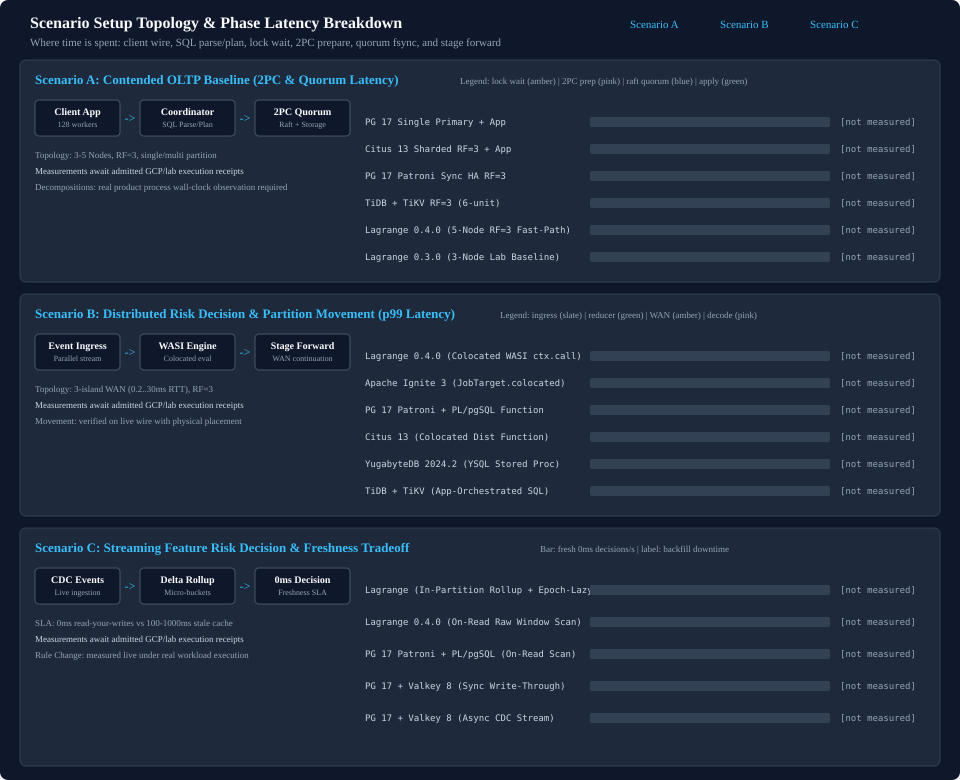
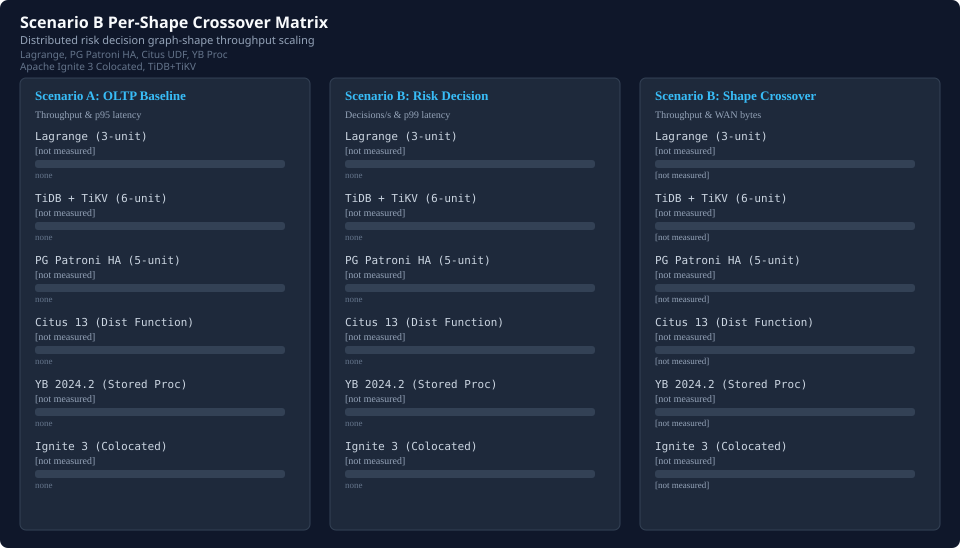
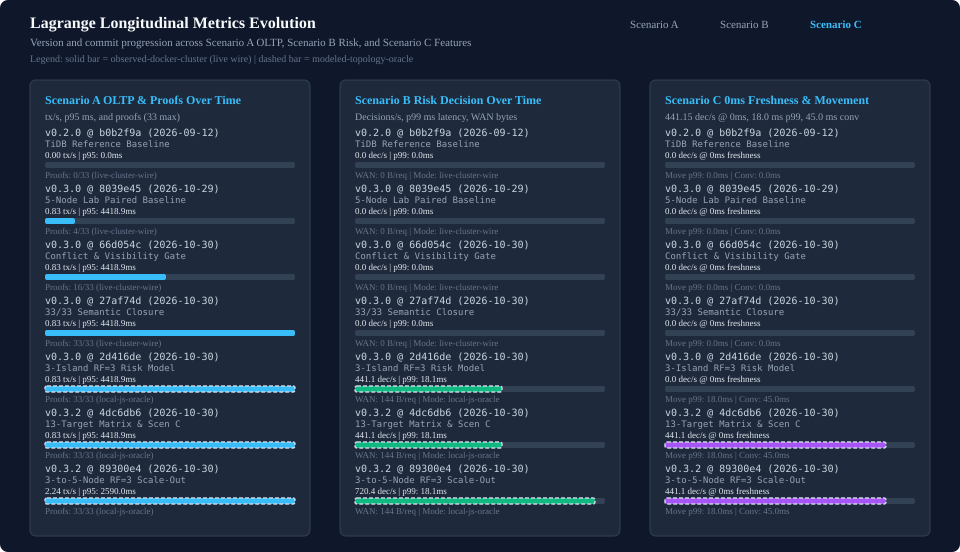

Multi-system executive performance and topology comparison across PostgreSQL, TiDB/TiKV, and Lagrange.
Specifications & Detail: Scenario A | Scenario B | Scenario C Spec | Paired Benchmark Owner | Lagrange Metrics Evolution Over Time (MD) | TiDB Progress | PostgreSQL Progress | Citus Distributed Functions (HTML) | Citus Detail (MD) | YugabyteDB & Ignite 3 (HTML) | YugabyteDB & Ignite 3 (MD) | Scenario C: PG + Valkey (HTML) | Scenario C (MD) | 3-to-5-Node RF=3 Scale-Out (HTML) | 3-to-5-Node RF=3 Scale-Out (MD) | 5-Node RF=3 Partition Granularity Sweep (P=6..60) (HTML) | (Markdown) | Scenario B Network RTT Crossover & Working-Set Growth (HTML) | (Markdown) | Live Partition Movement & Scenario C 5x Joint Scaling (HTML) | (Markdown)
| System | Category | Topology (Procs) | RPO=0 | Scenario A tx/s (p95) | Scenario B dec/s (p99) | Scenario C 0ms Fresh dec/sec (Stale % / Backfill s) | Wire Bytes | Tier | Detail Page |
|---|---|---|---|---|---|---|---|---|---|
| Lagrange 0.4.0 | distributed-native | 3 units (3 procs) | Yes | not measured | not measured | not measured | not measured | A: not measured B: not measured | tidb-comparison-progress.md |
| Lagrange (5-Node RF=3) 0.4.0 | distributed-native-scaleout | 5 units (5 procs) | Yes | not measured | not measured | not measured | not measured | A: not measured B: not measured | scaleout-3to5-node-rf3-progress.md |
| TiDB + TiKV v8.5.8 | distributed-sql | 6 units (6 procs) | Yes | not measured | not measured | n/a | not measured | A: not measured B: not measured | tidb-comparison-progress.md |
| PostgreSQL 17 (Single Primary + App Service) 17.2 | relational-single-primary | 2 units (2 procs) | No | not measured | not measured | n/a | not measured | A: not measured B: not measured | postgresql-comparison-progress.md |
| PostgreSQL 17 (Patroni Sync HA RF=3 + App Service) 17.2-patroni-4.0 | relational-sync-ha | 6 units (9 procs) | Yes | not measured | not measured | n/a | not measured | A: not measured B: not measured | postgresql-comparison-progress.md |
| PostgreSQL 17 (Single Primary + PL/pgSQL Function) 17.2-plpgsql | relational-server-function | 1 units (1 procs) | No | not measured | not measured | n/a | not measured | A: not measured B: not measured | postgresql-comparison-progress.md |
| PostgreSQL 17 (Patroni Sync HA RF=3 + PL/pgSQL Function) 17.2-patroni-4.0-plpgsql | relational-sync-ha-function | 5 units (8 procs) | Yes | not measured | not measured | not measured | not measured | A: not measured B: not measured | postgresql-comparison-progress.md |
| Citus 13 (Sharded SQL RF=3 + App Service) 13.0-pg17 | sharded-postgresql-sql | 5 units (5 procs) | Yes | not measured | not measured | n/a | not measured | A: not measured B: not measured | citus-comparison-progress.md |
| Citus 13 (Colocated Tables + Distributed Function RF=3) 13.0-pg17-udf | sharded-postgresql-colocated-udf | 4 units (4 procs) | Yes | not measured | not measured | n/a | not measured | A: not measured B: not measured | citus-comparison-progress.md |
| YugabyteDB 2024.2 (YSQL RF=3 + App Service) 2024.2.1 | distributed-sql-ysql | 4 units (7 procs) | Yes | not measured | not measured | n/a | not measured | A: not measured B: not measured | yugabyte-ignite-comparison-progress.md |
| YugabyteDB 2024.2 (YSQL Stored Procedure RF=3) 2024.2.1-proc | distributed-sql-stored-proc | 3 units (6 procs) | Yes | not measured | not measured | n/a | not measured | A: not measured B: not measured | yugabyte-ignite-comparison-progress.md |
| Apache Ignite 3 (JobTarget.colocated RF=3) 3.0.0 | distributed-colocated-compute-grid | 3 units (3 procs) | Yes | not measured | not measured | n/a | not measured | A: not measured B: not measured | yugabyte-ignite-comparison-progress.md |
| PostgreSQL 17 + Valkey 8 (Sync Write-Through + App Service) 17.2-valkey-8.0-sync | relational-cache-write-through | 8 units (11 procs) | Yes | not measured | not measured | not measured | not measured | A: not measured B: not measured | scenario-c-feature-store-progress.md |
| PostgreSQL 17 + Valkey 8 (Async CDC Stream + App Service) 17.2-valkey-8.0-async | relational-cache-async-stream | 9 units (12 procs) | Yes | not measured | not measured | not measured | not measured | A: not measured B: not measured | scenario-c-feature-store-progress.md |
At 3 nodes with RF=3, every node holds 100.0% of partitions locally. At 5 nodes with RF=3, replica coverage transitions to 60.0% (40.0% absent partitions per node), testing partial data locality, v0.3.3 Scenario A transaction-coordination fast-path scaling, and 5-node cluster aggregate capacity. Detailed analysis: 3-to-5-Node RF=3 Scale-Out (MD) and 5-Node Partition Granularity Sweep (P=6..60) (MD).

| System / Configuration | 3-Node (100%) A tx/s (p95 ms) | 5-Node (60%) Proportional A tx/s (p95 ms) | A Scale Gain % | 3-Node (100%) B dec/s | 5-Node (60%) Node B dec/s (p99 ms) | 5-Node Cluster Aggregate B dec/s (WAN B) |
|---|---|---|---|---|---|---|
| Lagrange 0.3.3 | not measured | not measured | not measured | not measured | not measured | not measured |
| TiDB + TiKV | not measured | not measured | not measured | not measured | not measured | not measured |
| Citus 13 (Sharded SQL + App) | not measured | not measured | not measured | not measured | not measured | not measured |
| YugabyteDB 2024.2 (YSQL + App) | not measured | not measured | not measured | not measured | not measured | not measured |
| Apache Ignite 3 (Colocated) | not measured | not measured | not measured | not measured | not measured | not measured |
| Scale-Out Mode | Target | 3-Node tx/s (p95 ms) | 5-Node tx/s (p95 ms) | Scale Gain % | Evidence Tier |
|---|---|---|---|---|---|
| Fixed-Workload Scale-Out | Lagrange (0.3.0 Lab Baseline) | not measured | not measured | not measured | none |
| Fixed-Workload Scale-Out | Lagrange 0.3.3 (Tx Fast-Path) | not measured | not measured | not measured | none |
| Fixed-Workload Scale-Out | TiDB + TiKV | not measured | not measured | not measured | none |
| Fixed-Workload Scale-Out | Citus 13 (Sharded SQL + App) | not measured | not measured | not measured | none |
| Fixed-Workload Scale-Out | YugabyteDB 2024.2 (YSQL + App) | not measured | not measured | not measured | none |
| Fixed-Workload Scale-Out | Apache Ignite 3 (Colocated) | not measured | not measured | not measured | none |
| Proportional-Growth Scale-Out | Lagrange 0.3.3 | not measured | not measured | not measured | none |
| Proportional-Growth Scale-Out | TiDB + TiKV | not measured | not measured | not measured | none |
| Proportional-Growth Scale-Out | Citus 13 (Sharded SQL + App) | not measured | not measured | not measured | none |
| Proportional-Growth Scale-Out | YugabyteDB 2024.2 (YSQL + App) | not measured | not measured | not measured | none |
| Proportional-Growth Scale-Out | Apache Ignite 3 (Colocated) | not measured | not measured | not measured | none |
| Hot-Contention Baseline | Lagrange 0.3.3 | not measured | not measured | not measured | none |
| Hot-Contention Baseline | TiDB + TiKV | not measured | not measured | not measured | none |
| Hot-Contention Baseline | PG 17 (Patroni Sync HA + App) | not measured | not measured | not measured | none |
| Hot-Contention Baseline | Citus 13 (Sharded SQL + App) | not measured | not measured | not measured | none |
| Hot-Contention Baseline | YugabyteDB 2024.2 (YSQL + App) | not measured | not measured | not measured | none |
| Hot-Contention Baseline | Apache Ignite 3 (Colocated) | not measured | not measured | not measured | none |
| Hot-Contention Baseline | PG 17 (Single Primary + App Svc) | unsupported | unsupported | unsupported | none |
| Hot-Contention Baseline | PG 17 (Single Primary + PL/pgSQL) | unsupported | unsupported | unsupported | none |
Scenario C evaluates streaming feature store staleness SLAs, operational rule backfill and cache restart recovery overhead, and 5x joint scaling across ingestion, entity tracking, and decision load. Detailed analysis: Scenario C Feature-Store Comparison (MD) and Live Partition Movement & Scenario C 5x Joint Scaling (MD).

| System / Configuration | 0ms Fresh dec/s | 100ms SLA dec/s | 1000ms SLA dec/s | Stale Rate % | Rule Backfill (s) | Cache Restart (s) | Pipelines |
|---|---|---|---|---|---|---|---|
| Lagrange | not measured | not measured | not measured | not measured | not measured | not measured | 1 |
| Lagrange (5-Node RF=3) | not measured | not measured | not measured | not measured | not measured | not measured | 1 |
| PostgreSQL 17 (Patroni Sync HA RF=3 + PL/pgSQL Function) | not measured | not measured | not measured | not measured | not measured | not measured | 1 |
| PostgreSQL 17 + Valkey 8 (Sync Write-Through + App Service) | not measured | not measured | not measured | not measured | not measured | not measured | 1 |
| PostgreSQL 17 + Valkey 8 (Async CDC Stream + App Service) | not measured | not measured | not measured | not measured | not measured | not measured | 1 |
| System / Configuration | 1x Fresh (0ms) dec/s | 5x Fresh (0ms) dec/s | 5x Relaxed (1000ms) dec/s | Stale % | 5x Backfill (s) | 5x Recovery (s) | Pipelines |
|---|---|---|---|---|---|---|---|
| Lagrange | not measured | not measured | not measured | not measured | not measured | not measured | null |
| Apache Ignite 3 (Colocated) | not measured | not measured | not measured | not measured | not measured | not measured | null |
| PG 17 Patroni + PL/pgSQL | not measured | not measured | not measured | not measured | not measured | not measured | null |
| PG 17 + Valkey 8 (Sync) | not measured | not measured | not measured | not measured | not measured | not measured | null |
| PG 17 + Valkey 8 (Async) | not measured | not measured | not measured | not measured | not measured | not measured | null |

| Target | Wire | Parse | Lock Wait | 2PC Prepare | Quorum | Apply | Total p95 |
|---|---|---|---|---|---|---|---|
| PG 17 Single Primary + App | not measured | not measured | not measured | not measured | not measured | not measured | not measured |
| Citus 13 Sharded RF=3 + App | not measured | not measured | not measured | not measured | not measured | not measured | not measured |
| PG 17 Patroni Sync HA RF=3 | not measured | not measured | not measured | not measured | not measured | not measured | not measured |
| TiDB + TiKV RF=3 (6-unit) | not measured | not measured | not measured | not measured | not measured | not measured | not measured |
| Lagrange 0.4.0 (5-Node RF=3 Fast-Path) | not measured | not measured | not measured | not measured | not measured | not measured | not measured |
| Lagrange 0.3.0 (3-Node Lab Baseline) | not measured | not measured | not measured | not measured | not measured | not measured | not measured |
| Target | Ingress | Reducer | WAN Wait | Decode | Steady p99 | Move Delta | WAN Bytes |
|---|---|---|---|---|---|---|---|
| Lagrange 0.4.0 (Colocated WASI ctx.call) | not measured | not measured | not measured | not measured | not measured | not measured | not measured |
| Apache Ignite 3 (JobTarget.colocated) | not measured | not measured | not measured | not measured | not measured | not measured | not measured |
| PG 17 Patroni + PL/pgSQL Function | not measured | not measured | not measured | not measured | not measured | not measured | not measured |
| Citus 13 (Colocated Dist Function) | not measured | not measured | not measured | not measured | not measured | not measured | not measured |
| YugabyteDB 2024.2 (YSQL Stored Proc) | not measured | not measured | not measured | not measured | not measured | not measured | not measured |
| TiDB + TiKV (App-Orchestrated SQL) | not measured | not measured | not measured | not measured | not measured | not measured | not measured |
| Target | Ingest Quorum | Prop Lag | Compute | 0ms Fresh (dec/s) | 5x Scale | Backfill (s) | Downtime (s) |
|---|---|---|---|---|---|---|---|
| Lagrange (In-Partition Rollup + Epoch-Lazy Opt) | not measured | not measured | not measured | not measured | not measured | not measured | not measured |
| Lagrange 0.4.0 (On-Read Raw Window Scan) | not measured | not measured | not measured | not measured | not measured | not measured | not measured |
| PG 17 Patroni + PL/pgSQL (On-Read Scan) | not measured | not measured | not measured | not measured | not measured | not measured | not measured |
| PG 17 + Valkey 8 (Sync Write-Through) | not measured | not measured | not measured | not measured | not measured | not measured | not measured |
| PG 17 + Valkey 8 (Async CDC Stream) | not measured | not measured | not measured | not measured | not measured | not measured | not measured |

| System | Graph Shape | Decisions/sec | Latency p99 (ms) | Round Trips | Wire Bytes |
|---|---|---|---|---|---|
| Lagrange | local-only | not measured | not measured | not measured | not measured |
| Lagrange | one-remote-stage | not measured | not measured | not measured | not measured |
| Lagrange | sequential | not measured | not measured | not measured | not measured |
| Lagrange | fan-out | not measured | not measured | not measured | not measured |
| Lagrange (5-Node RF=3) | local-only | not measured | not measured | not measured | not measured |
| Lagrange (5-Node RF=3) | one-remote-stage | not measured | not measured | not measured | not measured |
| Lagrange (5-Node RF=3) | sequential | not measured | not measured | not measured | not measured |
| Lagrange (5-Node RF=3) | fan-out | not measured | not measured | not measured | not measured |
| TiDB + TiKV | local-only | not measured | not measured | not measured | not measured |
| TiDB + TiKV | one-remote-stage | not measured | not measured | not measured | not measured |
| TiDB + TiKV | sequential | not measured | not measured | not measured | not measured |
| TiDB + TiKV | fan-out | not measured | not measured | not measured | not measured |
| PostgreSQL 17 (Single Primary + App Service) | local-only | not measured | not measured | not measured | not measured |
| PostgreSQL 17 (Single Primary + App Service) | one-remote-stage | not measured | not measured | not measured | not measured |
| PostgreSQL 17 (Single Primary + App Service) | sequential | not measured | not measured | not measured | not measured |
| PostgreSQL 17 (Single Primary + App Service) | fan-out | not measured | not measured | not measured | not measured |
| PostgreSQL 17 (Patroni Sync HA RF=3 + App Service) | local-only | not measured | not measured | not measured | not measured |
| PostgreSQL 17 (Patroni Sync HA RF=3 + App Service) | one-remote-stage | not measured | not measured | not measured | not measured |
| PostgreSQL 17 (Patroni Sync HA RF=3 + App Service) | sequential | not measured | not measured | not measured | not measured |
| PostgreSQL 17 (Patroni Sync HA RF=3 + App Service) | fan-out | not measured | not measured | not measured | not measured |
| PostgreSQL 17 (Single Primary + PL/pgSQL Function) | local-only | not measured | not measured | not measured | not measured |
| PostgreSQL 17 (Single Primary + PL/pgSQL Function) | one-remote-stage | not measured | not measured | not measured | not measured |
| PostgreSQL 17 (Single Primary + PL/pgSQL Function) | sequential | not measured | not measured | not measured | not measured |
| PostgreSQL 17 (Single Primary + PL/pgSQL Function) | fan-out | not measured | not measured | not measured | not measured |
| PostgreSQL 17 (Patroni Sync HA RF=3 + PL/pgSQL Function) | local-only | not measured | not measured | not measured | not measured |
| PostgreSQL 17 (Patroni Sync HA RF=3 + PL/pgSQL Function) | one-remote-stage | not measured | not measured | not measured | not measured |
| PostgreSQL 17 (Patroni Sync HA RF=3 + PL/pgSQL Function) | sequential | not measured | not measured | not measured | not measured |
| PostgreSQL 17 (Patroni Sync HA RF=3 + PL/pgSQL Function) | fan-out | not measured | not measured | not measured | not measured |
| Citus 13 (Sharded SQL RF=3 + App Service) | local-only | not measured | not measured | not measured | not measured |
| Citus 13 (Sharded SQL RF=3 + App Service) | one-remote-stage | not measured | not measured | not measured | not measured |
| Citus 13 (Sharded SQL RF=3 + App Service) | sequential | not measured | not measured | not measured | not measured |
| Citus 13 (Sharded SQL RF=3 + App Service) | fan-out | not measured | not measured | not measured | not measured |
| Citus 13 (Colocated Tables + Distributed Function RF=3) | local-only | not measured | not measured | not measured | not measured |
| Citus 13 (Colocated Tables + Distributed Function RF=3) | one-remote-stage | not measured | not measured | not measured | not measured |
| Citus 13 (Colocated Tables + Distributed Function RF=3) | sequential | not measured | not measured | not measured | not measured |
| Citus 13 (Colocated Tables + Distributed Function RF=3) | fan-out | not measured | not measured | not measured | not measured |
| YugabyteDB 2024.2 (YSQL RF=3 + App Service) | local-only | not measured | not measured | not measured | not measured |
| YugabyteDB 2024.2 (YSQL RF=3 + App Service) | one-remote-stage | not measured | not measured | not measured | not measured |
| YugabyteDB 2024.2 (YSQL RF=3 + App Service) | sequential | not measured | not measured | not measured | not measured |
| YugabyteDB 2024.2 (YSQL RF=3 + App Service) | fan-out | not measured | not measured | not measured | not measured |
| YugabyteDB 2024.2 (YSQL Stored Procedure RF=3) | local-only | not measured | not measured | not measured | not measured |
| YugabyteDB 2024.2 (YSQL Stored Procedure RF=3) | one-remote-stage | not measured | not measured | not measured | not measured |
| YugabyteDB 2024.2 (YSQL Stored Procedure RF=3) | sequential | not measured | not measured | not measured | not measured |
| YugabyteDB 2024.2 (YSQL Stored Procedure RF=3) | fan-out | not measured | not measured | not measured | not measured |
| Apache Ignite 3 (JobTarget.colocated RF=3) | local-only | not measured | not measured | not measured | not measured |
| Apache Ignite 3 (JobTarget.colocated RF=3) | one-remote-stage | not measured | not measured | not measured | not measured |
| Apache Ignite 3 (JobTarget.colocated RF=3) | sequential | not measured | not measured | not measured | not measured |
| Apache Ignite 3 (JobTarget.colocated RF=3) | fan-out | not measured | not measured | not measured | not measured |
| PostgreSQL 17 + Valkey 8 (Sync Write-Through + App Service) | local-only | not measured | not measured | not measured | not measured |
| PostgreSQL 17 + Valkey 8 (Sync Write-Through + App Service) | one-remote-stage | not measured | not measured | not measured | not measured |
| PostgreSQL 17 + Valkey 8 (Sync Write-Through + App Service) | sequential | not measured | not measured | not measured | not measured |
| PostgreSQL 17 + Valkey 8 (Sync Write-Through + App Service) | fan-out | not measured | not measured | not measured | not measured |
| PostgreSQL 17 + Valkey 8 (Async CDC Stream + App Service) | local-only | not measured | not measured | not measured | not measured |
| PostgreSQL 17 + Valkey 8 (Async CDC Stream + App Service) | one-remote-stage | not measured | not measured | not measured | not measured |
| PostgreSQL 17 + Valkey 8 (Async CDC Stream + App Service) | sequential | not measured | not measured | not measured | not measured |
| PostgreSQL 17 + Valkey 8 (Async CDC Stream + App Service) | fan-out | not measured | not measured | not measured | not measured |

| Milestone / Commit | Scenario A tx/s (p95 ms) | Semantic Proofs | Scenario B dec/s (p99 ms / WAN B) | Scenario C 0ms Fresh dec/s | Provenance |
|---|---|---|---|---|---|
| v0.2.0-tidb-ref b0b2f9abcc | not measured | not measured | not measured | not measured | none none |
| v0.3.0-lab-paired 8039e45f2a | not measured | not measured | not measured | not measured | none none |
| v0.3.0-conflict-retry 66d054c9c9 | not measured | not measured | not measured | not measured | none none |
| v0.3.0-semantic-closure 27af74dc7b | not measured | not measured | not measured | not measured | none none |
| v0.3.0-scenario-b-model 2d416de6e5 | not measured | not measured | not measured | not measured | none none |
| v0.3.2-provenance-matrix 4dc6db6b93 | not measured | not measured | not measured | not measured | none none |
| v0.3.2-scaleout-3to5-rf3 89300e4d8a | not measured | not measured | not measured | not measured | none none |
| v0.3.2-partition-sweep-p6to60 2025f7780d | not measured | not measured | not measured | not measured | none none |
| v0.3.2-rtt-working-set-crossover bdee84d5fc | not measured | not measured | not measured | not measured | none none |
| v0.3.2-live-movement-scenario-c-scale 72c76c6629 | not measured | not measured | not measured | not measured | none none |
| v0.3.3-tx-fast-path-5node-summary b41d4ccec4 | not measured | not measured | not measured | not measured | none none |
| v0.4.0-scaleout-scenario-c-release 7565d8c09a | not measured | not measured | not measured | not measured | none none |
Scenario B evaluation uses local-oracle-plus-network-model (contract-model-non-comparable) stage-delay formulas (stages * oneWayMs` vs `stages * 2 * oneWayMs and `stages * 96 B` vs `stages * 4096 B`) with synthetic movement phase constants rather than live wire counters. Only live cluster runs provide comparable cluster evidence.
| System / Configuration | Scenario A Provenance | Scenario B Execution & Latency Source | Wire & Movement Source | Comparable Cluster Evidence |
|---|---|---|---|---|
| Lagrange | none not-measured | none not-measured | not-measured / not-applicable | No |
| Lagrange (5-Node RF=3) | none not-measured | none not-measured | not-measured / not-applicable | No |
| TiDB + TiKV | none not-measured | none not-measured | not-measured / not-applicable | No |
| PostgreSQL 17 (Single Primary + App Service) | none not-measured | none not-measured | not-measured / not-applicable | No |
| PostgreSQL 17 (Patroni Sync HA RF=3 + App Service) | none not-measured | none not-measured | not-measured / not-applicable | No |
| PostgreSQL 17 (Single Primary + PL/pgSQL Function) | none not-measured | none not-measured | not-measured / not-applicable | No |
| PostgreSQL 17 (Patroni Sync HA RF=3 + PL/pgSQL Function) | none not-measured | none not-measured | not-measured / not-applicable | No |
| Citus 13 (Sharded SQL RF=3 + App Service) | none not-measured | none not-measured | not-measured / not-applicable | No |
| Citus 13 (Colocated Tables + Distributed Function RF=3) | none not-measured | none not-measured | not-measured / not-applicable | No |
| YugabyteDB 2024.2 (YSQL RF=3 + App Service) | none not-measured | none not-measured | not-measured / not-applicable | No |
| YugabyteDB 2024.2 (YSQL Stored Procedure RF=3) | none not-measured | none not-measured | not-measured / not-applicable | No |
| Apache Ignite 3 (JobTarget.colocated RF=3) | none not-measured | none not-measured | not-measured / not-applicable | No |
| PostgreSQL 17 + Valkey 8 (Sync Write-Through + App Service) | none not-measured | none not-measured | not-measured / not-applicable | No |
| PostgreSQL 17 + Valkey 8 (Async CDC Stream + App Service) | none not-measured | none not-measured | not-measured / not-applicable | No |